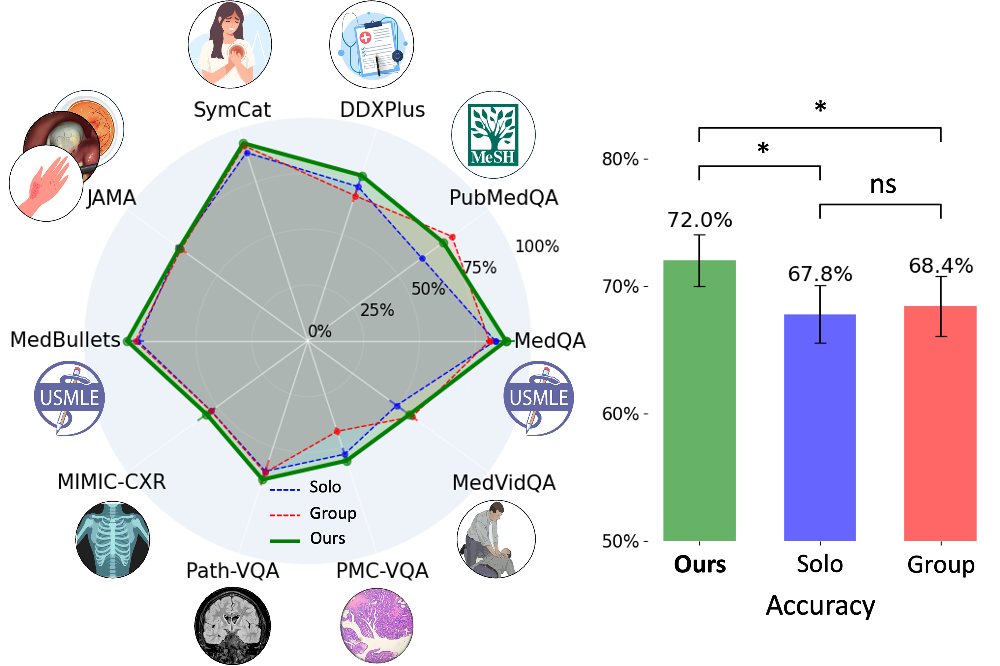

Main Result
Our method outperforms Solo and Group settings across different medical benchmarks. MDAgents significantly outperforms (p < 0.05) both Solo and Group setting methods, showing best performance in 7 out of 10 medical benchmarks tested. This reveals the effectiveness of adaptive strategies integrated within our system, particularly when navigating through the text-only (e.g., DDXPlus where it outperformed the best performance of single-agent by 7.2% and multi-agent by 9.5%) and text-image datasets (e.g., Path-VQA, PMC-VQA and MIMIC-CXR). Our approach not only comprehends textual information with high precision but also adeptly synthesizes visual data, a pivotal capability in medical diagnostic evaluations.
